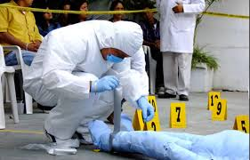

Mi proyecto de vida es estudiar la carrera de medicina forense. Me interesa mucho el área investigativa y quiero aportar al país con mi conocimiento. A partir de 2026 espero iniciar mis estudios universitarios y seguir creciendo como persona y profesional.
